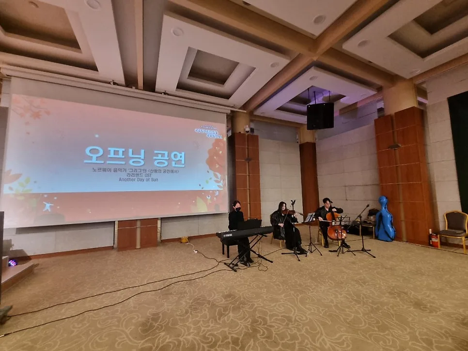

성북 행사 준비 · 2026년 11월 25일
송년회 장기자랑, 성북 회사 무대는 어떻게 이을까요?
송년회 장기자랑은 부서마다 한 곡씩 요구하기보다 낭독, 연주, 함께 부르기 중에서 원하는 무대를 먼저 받으세요. 각 팀에 첫 장면과 마지막 장면을 물으면 사회자가 어디까지 말하고 언제 무대를 비울지 정할 수 있습니다.

- 부서 이름 대신 관객이 처음 보거나 들을 장면을 신청서에 적습니다.
- 독주 뒤에는 마지막 음이 사라질 때까지, 낭독 뒤에는 낭독자가 고개를 들 때까지 다음 소개를 기다립니다.
- 관객이 함께할 부분은 출연자가 원할 때만 정하고, 참여할 구절을 미리 알려 줍니다.

1. 송년회 장기자랑 신청서에 첫 장면을 받습니다
총무 담당자가 신청서에 ‘장기’를 적어 달라고 하면 노래나 춤만 떠올리기 쉽습니다. 짧은 글을 읽어 줄 사람, 악기 한 소절을 들려줄 사람, 후렴을 함께 부를 사람도 신청할 수 있다고 먼저 써 보세요.
부서 대표가 아니라 무대에 서고 싶은 사람을 받습니다. 같은 부서에서 두 사람이 전혀 다른 무대를 내도 되고, 다른 부서의 두 사람이 한 팀을 만들어도 됩니다.
신청자가 적을 것은 작품 이름보다 구체적이면 좋습니다. “제가 인사한 뒤 연주해요”와 “말없이 첫 음부터 시작해요”는 같은 악기 공연이어도 사회자가 준비할 말이 다릅니다.
신청 양식의 마지막 칸은 ‘소개에서 하지 않았으면 하는 말’로 둡니다. 별명이나 평소 직급을 부르는 소개가 부담스럽다면 팀이 정한 무대 이름만 읽어도 충분합니다.
2. 같은 무대라도 객석에 부탁할 일은 다릅니다
다음 표는 참가 팀과 이야기할 때 펼쳐 놓을 예시입니다. 진행자에게 공연 내용을 전부 설명하는 대신 관객이 무엇에 귀 기울이면 되는지 한 줄만 정해 봅니다.
| 무대 유형 | 출연자에게 물을 것 | 사회자가 건넬 첫말 예시 |
|---|---|---|
| 두 사람이 번갈아 낭독 | 첫 문장을 누가 읽고 마지막 문장 뒤에 무엇을 하나요? | 두 목소리가 주고받는 짧은 글입니다. 첫 문장부터 들어 주세요. |
| 반주 없는 독주 | 인사부터 하나요, 첫 음부터 들려주나요? | 소개는 여기까지입니다. 첫 음은 연주자가 들려드립니다. |
| 후렴이 있는 합창 | 객석도 부를 구절이 있나요, 듣기만 해도 되나요? | 손을 내밀 때 마지막 한 줄만 같이 불러 주세요. |
| 짧은 상황극 | 줄거리를 모르고 봐야 재미있는 부분이 있나요? | 문을 두드리는 소리로 이야기가 시작됩니다. |
독주 다음에 상황극을 붙인다면 관객이 계속 조용히 있어야 하는지 헷갈릴 수 있습니다. 연주에는 박수를 청하고, 상황극에서는 첫 대사를 들려준 뒤 반응을 기다리는 식으로 부탁을 바꿉니다.

3. 소개말은 공연자가 할 말을 남겨 둡니다
두 사람이 직접 쓴 글을 읽는다면 사회자는 두 목소리가 번갈아 나온다는 점까지만 소개합니다. 글을 쓰게 된 이유를 첫 문장에서 들려줄 예정이라면 소개에서 같은 사연을 미리 풀지 않습니다.
소개말의 끝을 공연의 첫 행동과 맞춰 보세요. “큰 박수로 맞아 주세요” 뒤에 곧바로 작은 목소리로 낭독하면 첫 문장이 묻힐 수 있습니다.
입장할 때 박수를 받고 잠시 기다렸다 낭독할지, 미리 자리에 선 뒤 조용히 읽을지 출연자가 고르게 합니다. 둘 중 하나를 정하면 진행자도 관객에게 상반된 부탁을 하지 않게 됩니다.
합동 공연이라면 누가 안내할지도 합의합니다. 노래하는 동료가 직접 후렴을 가르쳐 주기로 했다면 사회자는 “함께 부를 부분은 잠시 뒤에 알려 드립니다”라고만 전하고 물러납니다.
4. 끝난 무대에서 다음 팀으로 넘어가는 말
마지막 음이 약하게 남는 독주 뒤에는 연주자가 손을 내리는 순간을 기다립니다. 사회자가 곧장 “다음 팀 나오세요”라고 하기보다 먼저 방금 들려준 사람에게 박수를 돌릴 때입니다.
두 팀 사이를 잇는 데 꼭 감상평이 필요한 것은 아닙니다. “두 사람의 낭독 잘 들었습니다.
이번에는 말 대신 기타 소리로 시작합니다”처럼 달라지는 한 가지만 짚어도 관객은 다음 무대를 맞을 수 있습니다.
실력이나 부서끼리 비교하지 않고, 본 것과 들은 것을 말합니다. “오늘 최고네요”보다 “두 목소리가 마지막 문장을 함께 읽었네요”가 낭독자에게도 다음 팀에게도 편한 끝인사입니다.

신청자가 적다고 현장에서 동료를 지목해 빈 무대를 메우지는 않습니다. 공연자가 후렴 한 번을 더 부르고 싶은지 먼저 묻거나, 준비한 무대만 소개하고 식사 순서로 돌려도 됩니다.
5. 성북 행사장의 도착점과 첫 무대를 따로 적습니다
성북 운영 지역 안내에 나오는 이동 기준은 노원 본사에서 성북구청까지 차로 약 10분 · 9.8km입니다. 막히지 않을 때 기준이며 출퇴근 시간에는 더 걸릴 수 있습니다.
구청이 도착점인 이 수치를 회사 연회장까지의 시간으로 옮겨 쓰지 않습니다. 담당자는 실제 행사장 주소(길음동 · 정릉동 등)와 건물 안에서 첫 팀이 준비할 곳을 각각 알려 주세요.
첫 팀이 객석에서 일어나 무대까지 와야 한다면 사회자의 소개가 끝날 때 이미 연주 자세를 갖추기는 어렵습니다. 가까운 곳에서 준비한 뒤 이름을 부를지, 먼저 입장하고 나서 소개를 들을지 출연자와 정합니다.
6. 담당자가 정할 것과 사회자에게 건넬 것
기업 행사 안내와 송년회 사회·레크리에이션 안내를 살펴보고, 회사가 고른 무대와 진행을 맡길 구간을 구분합니다. 한 팀의 소개부터 다음 팀의 첫 행동까지 실제 대화 속도로 읽으면 어색한 연결이 잘 드러납니다.
자동 견적서에서 필요한 항목을 보고 견적 문의에 확정된 참가 방식과 장비를 적어 주세요. “독주 두 팀은 반주가 없고 합창 한 팀만 음악을 씁니다”처럼 소리가 어떻게 시작되는지를 알려 주면 누구와 무엇을 더 맞출지 분명해집니다.
자주 묻는 질문
노래를 하지 않는 직원도 참가할 수 있나요?
두 사람이 짧은 대사를 주고받거나 직접 쓴 글을 읽는 방식도 열어 두세요. 음악을 틀지 않는 순서라는 점을 알리면 사회자도 첫 문장을 가리지 않고 넘겨줄 수 있습니다.
팀이 앙코르를 원하지 않으면 어떻게 닫나요?
미리 합의한 끝인사를 듣고 박수를 보낸 뒤 다음 팀을 소개합니다. 객석에서 더 듣고 싶다는 말이 나와도 출연자에게 현장에서 다시 선택하도록 요구하지 않습니다.
힐링엔터테인먼트는 사내 송년회에서 무엇을 맡나요?
대표 MC 이현호가 식순 사회와 레크리에이션을 직접 진행합니다. 연회장 장비를 먼저 확인하고 필요한 음향 장비를 협의합니다.
행사 날짜가 정해지셨나요?
날짜 · 지역 · 인원 · 행사 종류만 알려 주시면 행사에 맞춰 상담 · 견적을 안내드립니다. 행사 중엔 통화가 어려우니 문자 · 카톡을 남겨 주세요.